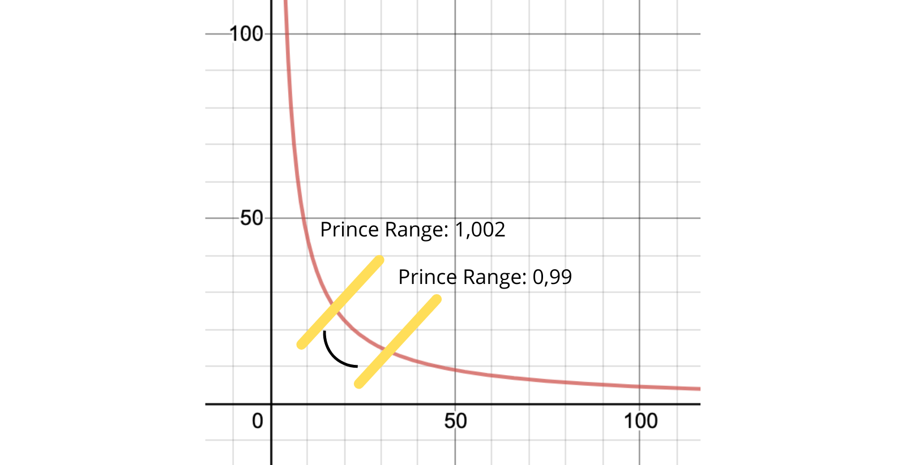

Uniswap
Uniswap is arguably the single-most important application to the Ethereum ecosystem. There are many like it, but it is undoubtedly the best of its kind, with no near competitors. With thousands of different tokens being deployed, there needs to be a simple and decentralized way to exchange them. It is fast, decentralized, and easy to use.
Uniswap is a Decentralized Exchange (DEX) for tokens on the Ethereum blockchain. It gives you the ability to trade Ether, or any ERC-20 token, for something else. It does this by being what is known as an Automated Market Maker (AMM)
Automated Market-Makers (AMM)
Imagine a normal stock exchange, or even a crypto one like Coinbase. If you go to an advanced trader page, they show you a list of all the transactions happening in real time. This is because normal exchanges work on what’s known as the order book model. This is where in order for you to sell, someone must buy what you are selling, at that price. In order to buy, someone has to be selling. Sometimes, there is nobody at that exact moment selling at the price you want, so a market maker comes into play. This is a person, who provides liquidity to the market, trying to profit off of difference in the bid-ask spread. Without them, many transactions would be slow or fail.

Source: Coinbase Pro
However, these centralized exchanges have to run all the time, constantly checking for bids from both sides. This can be very slow, and in the world of smart contracts, incredibly expensive. Uniswap, and all AMM’s, avoid this by using an automated strategy for calculating price. It is done algorithmically after every trade, constantly adjusting itself to your benefit. It does this through a collection known as a liquidity pool.
Why would you use this?
Let’s say you wanted to trade your Ether for Chainlink, for whatever reason. You might not want to go through an exchange. This can be because of high exchange fees, lack of trust, desire for anonymity, or that exchanges will make you sell your ether first, incurring a taxable profit event. With Uniswap, one transaction can allow you to directly trade one asset for another, without first having to sell on the open market.
How does it work?
Decentralized exchanges utilize liquidity pools. A liquidity pool is exactly what it sounds like. Unused tokens and coins are added to a pool, and people trading withdraw from it. When you want to take something out, you have to first put in an equal amount of value. The pool is managed by the smart contract protocol, and contains two assets, constantly balancing each-other out.
Let’s revisit the Ether->Chainlink example. If I wanted to trade, all I would have to do is send a certain amount of Ether to the pool’s contract, and it would calculate the amount of chainlink I am entitled to in return. It has an algorithm that calculates this, of which I will discuss later. You don’t need to know how specifically it works to use it.
Each pool contains 2 assets. However, if the swap you want to do does not have a pool, then the protocols will still route it for you. More exotic trades, like from Chainlink -> Uniswap, may not have a pool. The protocols will recognize this, and route it for you. So your final transaction values may be the same, but the path it takes may look like Chainlink -> Ether -> Uniswap
Because of the way these algorithms work, and a series of economic instruments, the price of asset swaps stays relatively close to its true-market value. This is because these contracts cannot reach out to the open internet to get the price of assets in-real time. It would be very slow, difficult, and expensive. You may not get a price exactly as you see on Coinbase, but part of that can be chalked up to the cost of using the application.

Image Source: Uniswap Web Interface
This is the web interface for Uniswap. It’s very simple. You simply select the asset you want to trade, the one you want to receive, and the amount you want to put in. It then calculates the amount you get in return, and other necessary data behind the scenes. All you have to do is click send, after connecting your browser-wallet.
Why does it have the price of Ether listed 3 times? And why is the amount I get in return the lowest?
- This is the result of two things:
The price of Ether
~$2,416.68is the current market value, as retrieved by some external website. This tells you want the actual exchange-market-value is.The value it returns to you is an estimate, at your time of transaction. It is defined by the liquidity pool. This number fluctuates every second, as people add and remove from the liquidity pool. It will make more sense later how this number is calculated, when I explain it in depth. The more assets in the pool, and the more people trading, the closer this number gets to its true value.
You have to pay a transaction fee to the liquidity providers. Based on the coins you are trading. This is factored into the amount of tokens you receive in exchange.
It’s also important to remember, that without an external source of data, it is truly a mathematical marvel how accurate this system is. If coinbase quotes you a a price of ~$2,416/Eth and Uniswap gives you ~$2,412/Eth then it’s only a 0.16% difference in true value.
(4 / 2416) * 100 = 0.16%
Providing Liquidity
Liquidity providers are the heart of this application, and what keeps it decentralized. Anyone who owns any-two coins or tokens can provide liquidity. This means to put it into a pool, and earn fees on all trades. It can be withdrawn at any time.
Whenever you use a DEX, users pay a fee in the coins they are trading. This fee is different based on the creator of the pool, and is used to incentivize various pools. This is because having a direct-trade pool, instead of routing through different pools, can decrease your exchange fees and gas cost. However, because they may get less exchanges, the fees have to be higher to incentivize people to provide liquidity to it. This can be either 1%, 0.3%, or 0.05%. The more exotic the pair, and less available liquidity, the greater the fee.
This fee is then distributed to the liquidity providers based on your individual contribution to the pool. If $1 Million is collected in fees everyday, and you own 1% of the liquidity, then you get $10k everyday. This is kept track of using tokens. When you deposit your liquidity into a pool, the pool issues you LP-Tokens, ERC-20/721 compliant. They are redeemable at any time for the amount you put in, plus the accrued fees. Since they’re also tokens, they can be traded if you wish.
Each pool is a smart contract, with it’s own tokens to mint and distribute automatically. In previous versions (v2), this LP (liquidity provider) token was an ERC-20. In V3, this changed to an ERC-721. I will explain why later, but it’s not important if you just want to be a simple user.
Price Curves
This next section is a detailed technical explanation of how these liquidity pools and protocols work. You don’t need to know how in order to use it, but it’s some interesting stuff.
I’m sorry, but

Image Source: Futurama
Uniswap is what is known as a constant-product market maker. The core of Uniswap, and many dex’s, is one fundamental equation:
\(x*y=k\)
x = quantity of token A
y = quantity of token B
k = a constant
k is set at the time of pool creation, and must always be the same.
This creates the following price curve.

At any point in time the reserves in the pool create a point on that curve. When you put tokens into a pool (x), for a swap, you move it in one direction. The amount you get out (y) is the opposite amount of tokens necessary to keep k constant.
Therefore your exchange rate can be expressed as the ratio of tokenX to tokenY, or x/y.
This means that as you trade larger values, your exchange rate gets worse. As you move the curve too far in one direction, your marginal cost gets higher and higher.
When you provide liquidity you have to provide values of both tokens, to keep the pool in balance.
In Uniswap-V2, this liquidity was dispersed uniformly over the curve. As long as you provided liquidity, you got fees on every single trade, regardless of price (point on the curve). In Uniswap-V3 (which we’re in right now), this liquidity is concentrated into ranges. When you add your liquidity, you provide a price range. This is two points on the curve. If a trade occurs within that price range, you get the fees associated with the trade.
source: medium @arnau ramio
This allows your liquidity to be more efficient, hundreds of times over. Take the above curve, and a stablecoin pair like USDC->Dai. The exchange rate never really trades beyond a range of $0.98 and $1.02. This small range may only be 10% of the total price curve. When liquidity is provided uniformly across the curve, only 10% of your liquidity is used to earn fees while the other sits around useless. When you provide a trading range, you can provide less liquidity, while still earning the same amount of fees. This makes your provided capital more efficient.
For example, if you provided $10k of Ether & Chainlink to a uniform distribution curve, the normal trading range may only be 10% of the curve. If you can correctly identify this range, you can provide only ~10% of the amount you normally would and earn the same amount of fees, as long as trading price stays within your defined range. This makes it 10x more efficient.
The same logic works with how rewards are distributed. If you own 1% of the liquidity provided in the range of [0.98, 1.02], then whenever a trade is executed in that price range, you get 1% of the allocated fees.
This is also why there are different fee tiers. Price ranges that are more commonly used have lower fees, because of their ubiquity. However, ranges that are more exotic or outside of normal traffic tend to accrue lower fees, therefore the percent charged must be higher. This is necessary to incentivize people to provide liquidity to those ranges. If the fees were the same, then nobody would provide liquidity at certain parts of the curve, and trading there would be impossible. This system of incentives is necessary to ensure that at any time you can make a trade as there is enough liquidity.
This is a very difficult concept to grasp and I highly recommend you check out the two following videos for further aid. It took me a long time and a bunch of paper, literally writing out these curves myself to finally grasp it.
Video Sources: Finematics Youtube
In the previous version where all provided liquidity was the same, each pool could issue an ERC-20 token, because it was fungible, all liquidity was the same. In V3, due to concentrated liquidity curves, each token is an ERC-721 (NFT) token. This is necessary to ensure proper management and accounting of all provided liquidity across many individualized price curves.
Arbitrage
A good part of what keeps the exchange rate close to reality, is a financial maneuver called arbitrage. Basically, the existence of multiple decentralized-exchanges allows people to take advantage of price discrepancies and profitability. Let’s imagine this using two stablecoins for simplicity. Let’s imagine on uniswap for a brief period the exchange rate of USDC->Dai is 1 USDC = 0.99 DAI. On Sushiswap, the rate may still be 1 Dai = 1 USDC. People will notice this, and exchange their USDC for Dai. They then take it over to Sushiswap (or another Dex), and convert it back to USDC for a profit of $0.01 / USDC. This is because they bought Dai at $0.99 on Uniswap and sold it for $1 somewhere else.

This pushes the point on the curve slightly to the left, back towards equilibrium. This is because they are decreasing the supply of Dai, and increasing the supply of USDC. This pushes price back towards equilibrium. The same happens when price is too high above a normal range. When the price of Dai goes > $1, arbitragers will buy Dai from somewhere cheaper, and start selling it on Uniswap, increasing supply and pushing price down.
If they’re only making 1 cent on each USDC how do they make a profit?
Good question, by having enough to trade with you can in fact be very profitable. $.01 doesn’t seem like a lot, but if you’re trading 1k Dai on each arbitrage opportunity that can really add up. However, you are limited by gas costs. These maneuvers can be great profit opportunities, but at present are complicated and involve spending a lot of Eth on gas. If you can afford it my hat’s off to you. These are done with bots, not humans who constantly monitor prices for opportunities like such.
Some more advanced traders will even use something known as a flash loan, allowing them to access huge amounts of borrowed funds temporarily for these maneuvers. I will cover flash loans in a future article.
Slippage, Sandwich Attacks, and Front-Running
When you go to Uniswap’s website, the exchange rate and output value they give you are estimates, at that point at time. If you recall, the exchange rate re-adjusts itself after every transaction involving the pool. This can occur several times within the same block, based on ordering. If someone has a large transaction of the same pool, ordered before you in the block, your exchange rate can change. This can be to your detriment, and the attacker’s profit.
This situation creates what’s known as slippage, and makes you the victim of a sandwich attack/frontrunning.
Slippage is simply when the amount you expect to receive is different from the amount you really receive. If you initiate a transaction on Uniswap, expecting to receive 100 Eth, and when the transaction finishes you only receive 99 Eth, your slippage rate is 1%. This is obviously bad for you, because you get less than you want. This is because of the rapidly fluctuating price of various assets. There are two ways this occurs:
- Sometimes, when your trade was very large, you can move the point on the liquidity curve. If you’re trading
$10kworth of assets in a pool with only$100kin provided liquidity, then your trade has the potential to dramatically move the point on the price curve. This would result in a devaluation of your own assets. This is also known as the price impact.
Luckily this can be solved by breaking your large transactions into smaller transactions. This gives arbitragers time to leverage the price change, and keep your transaction from causing too much havoc.
This is also solved by simply having larger pools. The more assets there are in a pool, the more difficult it is for one trade to change the price.
Your asset just depreciated on the open market while waiting for the transaction to be processed. You might end up with the same amount of output tokens, but if you wanted to sell it on Coinbase, the lower price just means less profit.
Sometimes however, you can be victim of a sandwich attack. This is when someone else essentially steals your trade, to make their own profit at your expense. When you submit a trade, before it is processed and put into a block, it sits in what’s known as the mempool. There are bots that look at all waiting transactions, and basically copy your large ones and execute them before you. They then wait until your transaction is also processed, and submits a third transaction immediately after, selling the assets you just bought for profit. It’s a sandwich attack because it sandwiches your own transaction between two others.
This next part can get difficult. It may help to write out some of these numbers on a piece of paper.
Let’s take an imaginary liquidity pool with 10 Ether and 100 Dai. This makes the exchange rate 10/1 for Ether->Dai so 1 Eth = 10 Dai, or 1 Dai = .1 Eth. In this situation with the equation x * y = k you get 100 * 10 = 1,000.
Now let’s imagine I was about to make a trade of 5 Ether for what I think is about to be ~33.33 Dai. This fits the rules because afterwards 15 Eth * 66.67 Dai = 1,000 and 100-66.67 = 33.33. For the sake of this example, don’t worry about the bogus exchange deal that results from tons of slippage. You expect that trade to get you 6.66 Dai/Eth.
Someone with a mempool bot may see this high impact trade you’re about to make, and decide to sandwich you. They take the exact same trade and execute it before you in the block, at your expected exchange rate. Remember, when this trade executes the bool re-balances and your next transaction would therefore be at a different rate than what you’re expecting. After this transaction, the pool contains 15 Eth & 66.67 Dai.
- When your transaction goes to be executed, you then get the following exchange:
5 Ether -> 16.67 Daior3.334 Dai/Eth. This is because after your transaction occurs the pool would contain20 Eth & 50 Daibecause20 * 50 = 1,000. Therefore you’ve seen basically~50% slippage, a50%change in your expected value, and your real value.
Now, with both transaction executed, this pool is lopsided to Eth, with the price pushed down. The current exchange rate now looks like 1 Dai = 0.4 Eth or 1 Eth = 2.5 Dai. This has created an arbitrage opportunity for anyone holding Dai to bring the price back to equilibrium. The attacker who sandwiches you then sells their bought Dai back to the pool for Eth. They get the following exchange.
33.33 Dai -> 8 Eth. This is because the pool after the sale contains 83.33 Dai * 12 Eth. Remember that the constant product must be 1000, so with a little bit of algebra we know that 1000/83.33 = 12 and 20-12 = 8, so the attacker now has 8 Eth. They got an exchange rate of 4.16 Eth/Dai. Now the attacker has 8 Eth, instead of the 5 Eth he started with, for a 60% Profit.
Now, this maneuver can be quite expensive in terms of gas, conducting 2 Uniswap transactions rapidly, as well as unpredictable. This is where it gets interesting. The people conducting these maneuvers are colluding with the miners, to allow them to do it. This only works if you can convince the miner mining the block to order your transactions accordingly. This is a difficult and near impossible task to do by guessing gas prices. These flash traders will collude with the block miner to order transactions accordingly, promising part of the profit if they comply. This is known as miner extractable value. The flash traders may submit transactions with low, or even 0, gas. If they expect to profit 10 Ether off the transaction, they may promise and give the miner 1 Ether, or something else high value. This value would be higher than the transaction-fee they get from a regular transaction, and thus make it way more profitable to play-ball with the flash traders.
There are many proposed solutions to this problem. It can also help to break up your transactions into smaller chunks, to prevent being front-run.
Final thoughts
Uniswap also has a governance token, $UNI, used to initiate changes to the protocol. It is available on most major exchanges.
Uniswap is an integral part of the DeFi and ethereum platform. Without it there would be no way to swap the millions of tokens circulating in a decentralized way. It currently is the single-largest consumer of gas Dapp, with no near competition.
This has been a detailed primer on everything you need to know about Uniswap. I didn’t even cover topics such as Impermanent Loss, Sushiswap, yield farming, etc. I may write more articles on those topics later, if I feel I need to, or there’s a community desire to read them.
I hope you enjoyed this detailed explanation. If you did, please consider donating, to help me be able to continue writing.
Ether & Token Address: 0xaB5409b0E5a66AcC9D63f668414539A60a5917C1